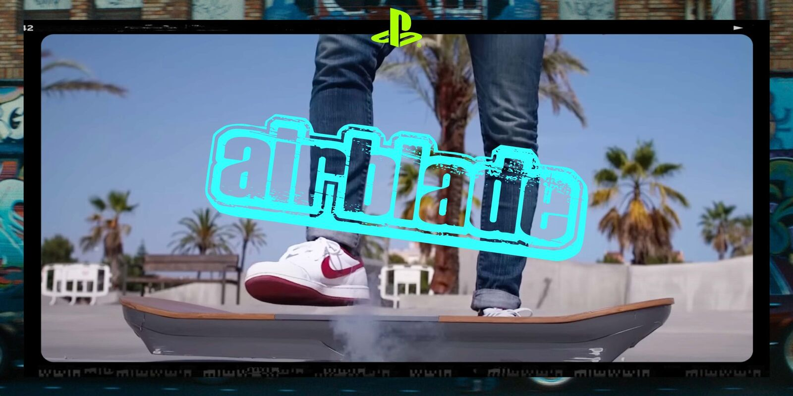
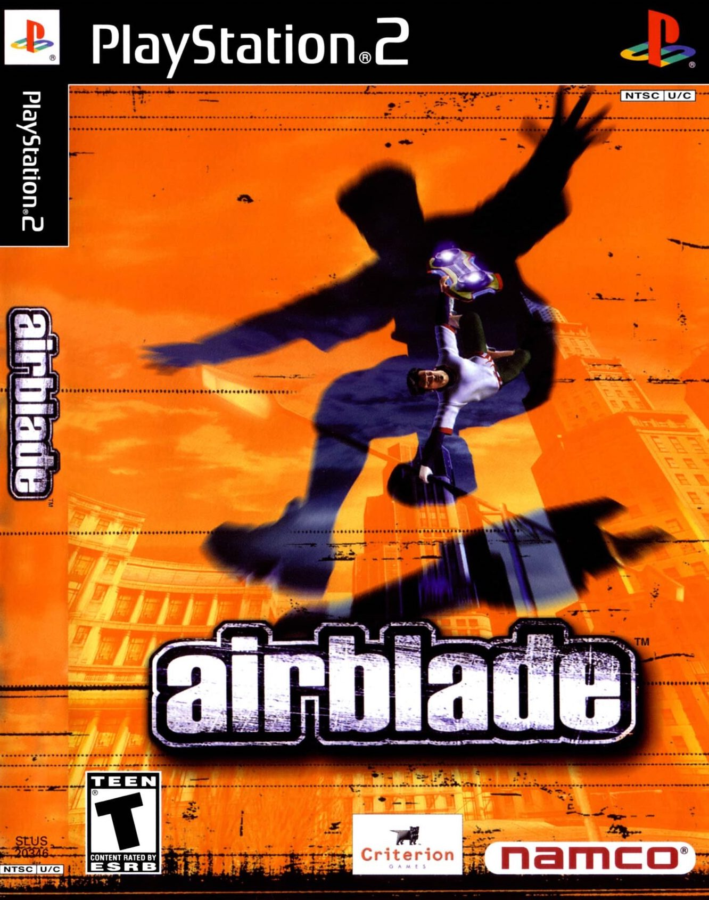
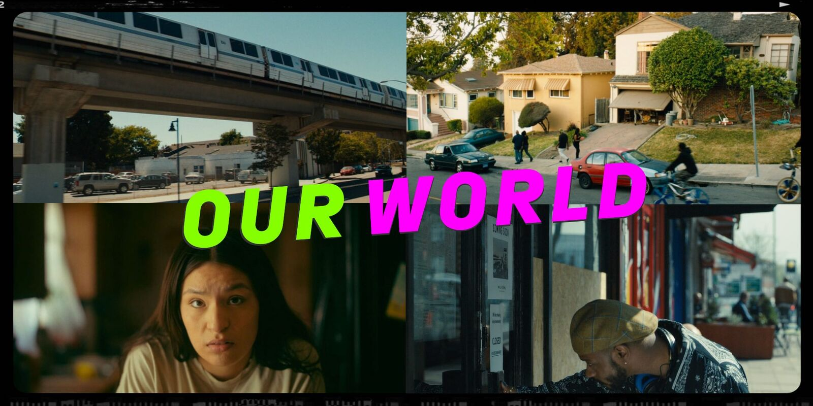
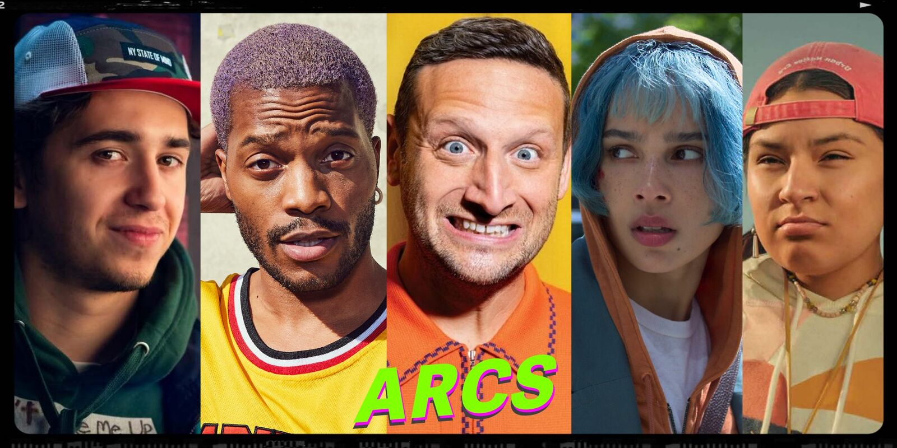
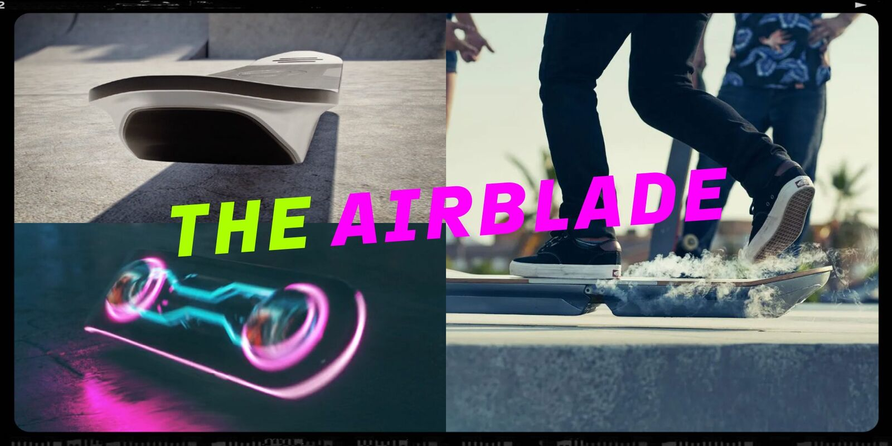
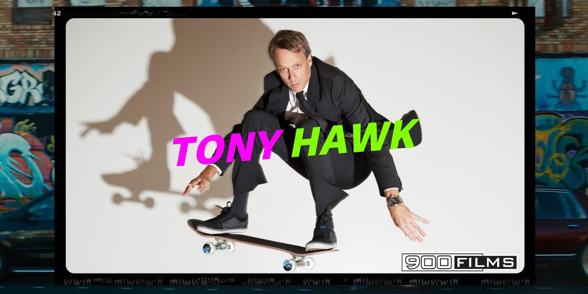

Sony Pictures Television / PlayStation Productions
AIRBLADE

The Work
From IP
to TV

Created and developed AirBlade over two and a half years with Sony Pictures Television and PlayStation Productions, working closely with Sony's development team. Tony Hawk joined the project as a producer and major creative contributor.
Wrote the series bible, built the pitch deck, shaped the world and characters, and wrote and produced the sizzle reel with the Sony team.
Watch Sizzle Reel ↗Selected Development Materials




Producer / Creative Contributor
Tony Hawk
Tony Hawk and 900 Films served as producers, helping ground the series in the culture, language and reality of skateboarding.